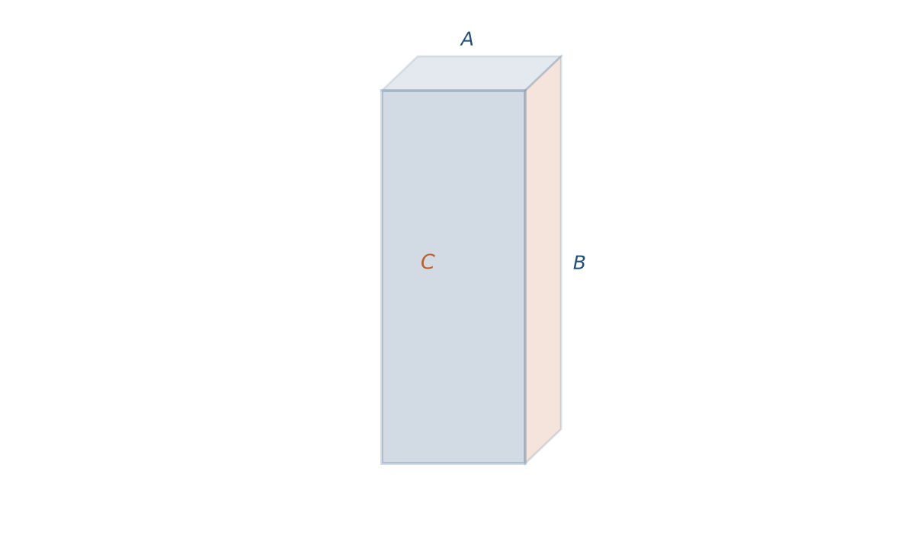
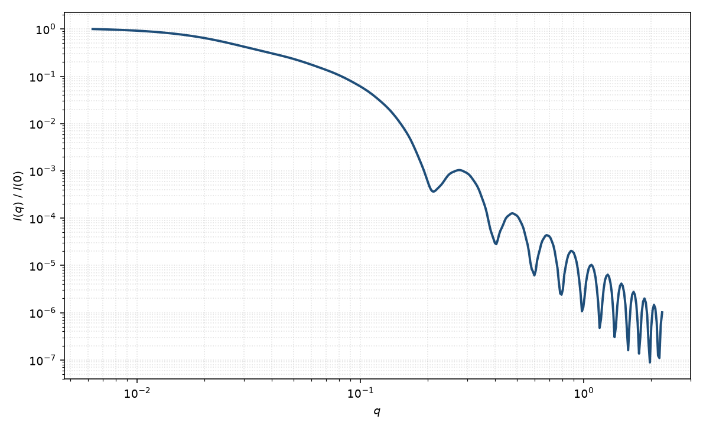

矩形棱柱
rectangular prism
适用场景
几何仍是直角砖块，但明确指定 $C$ 为棱柱（挤出）轴、$A\times B$ 为矩形截面。适用于纳米棒/带（截面近似矩形）、挤压生长的晶须，以及需要与圆柱对照的方形截面柱。
与平行六面体的差别是约定与取向角定义，不是另一套振幅：粉末 $I(q)$ 在相同 $A,B,C$ 下应一致。本页把 $\theta$ 取为 $\mathbf{q}$ 与 $C$ 轴夹角，便于和圆柱的 $\alpha$ 对照。$A=B$ 且与圆柱半径可比时，中间 $q^{-1}$ 相似，高 $q$ 因棱角而不同。
截面明显圆形用圆柱；空心用空心矩形棱柱。
物理图像
振幅仍是三个 $\mathrm{sinc}$ 之积。Nayuk 与 Huber 把角度定义成棱柱轴相对 $\mathbf{q}$ 的极角，再对截面方位平均。细长时（$C\gg A,B$）中间区 $\sim q^{-1}$，截面边长决定高 $q$ 振荡；扁平时（$C\ll A,B$）中间区 $\sim q^{-2}$。
回转半径 $R_g^2=(A^2+B^2+C^2)/12$，与平行六面体相同。
示意图


核心公式
出发点
稀释、取向无规的均匀粒子，相干散射振幅是衬度对平面波相位的体积分
$$F(\mathbf{q})=\int_V \Delta\rho(\mathbf{r})\,\mathrm{e}^{i\mathbf{q}\cdot\mathbf{r}}\,\mathrm{d}^3r.$$几何仍是直角砖块 $V=ABC$，但指定 $C$ 为挤出轴。令 $\theta$ 为 $\mathbf{q}$ 与 $C$ 轴夹角、$\phi$ 为截面方位，则 $q_\parallel=q\cos\theta$，截面分量 $q A\sin\theta\cos\phi$、$q B\sin\theta\sin\phi$。
推导
体积分在三棱上分离，各得一个 $\mathrm{sinc}\,x=\sin x/x$。与平行六面体同一闭式，只是把 $q_x,q_y,q_z$ 写成棱柱角：
$$F(q,\theta,\phi)=\Delta\rho\,V\cdot\mathrm{sinc}\!\left(\frac{qC\cos\theta}{2}\right)\mathrm{sinc}\!\left(\frac{qA\sin\theta\cos\phi}{2}\right)\mathrm{sinc}\!\left(\frac{qB\sin\theta\sin\phi}{2}\right).$$对轴极角与截面滚转粉末平均（第一卦限，$\int_0^{\pi/2}\sin\theta\,\mathrm{d}\theta\cdot\frac{2}{\pi}\int_0^{\pi/2}\mathrm{d}\phi$）
$$P(q)=\frac{2}{\pi}\int_0^{\pi/2}\int_0^{\pi/2}|F/F(0)|^2\sin\theta\,\mathrm{d}\theta\,\mathrm{d}\phi.$$$A=B=C$ 时与立方平行六面体相同。稀释 $I(q)=n(\Delta\rho)^2 V^2 P(q)+B$。
低 $q$ 与渐近
与砖块同一 Taylor：$\mathrm{sinc}^2(q_i L_i/2)=1-q_i^2 L_i^2/12+O(q^4)$，粉末后 $P=1-q^2(A^2+B^2+C^2)/36+O(q^4)$，故 $R_g^2=(A^2+B^2+C^2)/12$。Guinier 指数形式在 $qR_g\lesssim 1$ 可用。
细长 $C\gg A,B$ 时中间区 $\sim q^{-1}$，高 $q$ 振荡由截面边长决定；扁平 $C\ll A,B$ 时中间区 $\sim q^{-2}$。尖锐界面大 $q$ 包络仍是 Porod $q^{-4}$。方形截面的极小相位不同于圆柱的 $J_1$ 根。
参数表
| 参数 | 符号 | 含义 | 单位 | 典型范围 |
|---|---|---|---|---|
| 截面边 | $A$, $B$ | 矩形截面两边全长 | Å 或 nm | 8–400 Å |
| 棱柱长 | $C$ | 沿挤出轴的全长 | Å 或 nm | 20–5000 Å |
| 极角 / 方位角 | $\theta,\phi$ | 轴及截面方位（二维） | 度 | 由取向分布约束 |
| 衬度 | $\Delta\rho$ | 相对溶剂 SLD 差 | Å$^{-2}$ | 均匀柱 |
| 标度 / 本底 | $\mathrm{scale}$, $B$ | 前置因子与本底 | 与强度单位一致 | 实验相关 |
拟合注意
长度多分散改 $q^{-1}$ 区跨度；截面边长多分散抹高 $q$ 振荡。两者与圆柱的“长度 vs 半径”多分散对应，不可互换。
取向：一维粉末平均；二维还要截面滚转角。勿把方形截面的弧向四重对称误读成圆柱。
磁性：截面各向异性退磁，磁 SLD 与核 SLD 分通道。可辨识性：仅低 $q$ 时 $A,B,C$ 相关；看到中间斜率与截面振荡后才能分开。
相近模型
参考文献
- Mittelbach, P.; Porod, G. Zur Röntgenkleinwinkelstreuung verdünnter kolloider Systeme. VII. Acta Phys. Austriaca 1961, 14, 185–211.
- Nayuk, R.; Huber, K. Formfactors of Hollow and Massive Rectangular Parallelepipeds at Variable Degree of Anisometry. Z. Phys. Chem. 2012, 226, 837–854. DOI: 10.1524/zpch.2012.0257